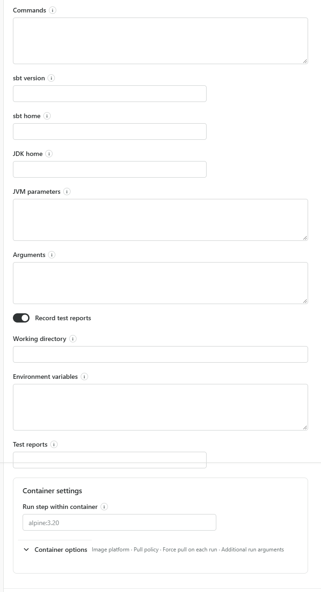

Simple Build Tool
Runs sbt with commands and a version. Test reports under target/test-reports are recorded for you.
When to use it
Use it for Scala projects, such as a game-analytics job.
How to set it up
- Open the build configuration and click Settings › Build Steps.
- Click Add build step. Type
Simple Build Toolin Filter step types if you like, then click the Simple Build Tool tile (group Build tools). - Type a Step name, for example
Test analytics. - Fill in the fields described below.
- Optional: set Execute step, Conditions and Retry on failure. See The steps list and the step editor.
- Click Save.

Every field
| Field | What it does | Default | Example |
|---|---|---|---|
| Commands | One sbt command per line, such as clean and test. A command with spaces, like testOnly MySpec, stays one argument. Empty starts the interactive shell, which has no input here, so give at least one command. | Empty | clean then test |
| sbt version | Passed as -sbt-version. Empty uses the version the project sets. | Empty | 1.10.0 |
| sbt home | The folder of an sbt installation on the agent. The step runs bin/sbt in it. Empty uses sbt from the PATH. | Empty | C:\tools\sbt |
| JDK home | The folder of the JDK sbt runs on, set as JAVA_HOME for this step. | Empty | C:\jdk-21 |
| JVM parameters | Options for the JVM, one per line, such as -Xmx2G. Each is passed to sbt as -J plus the option. | Empty | -Xmx2G |
| Arguments | Launcher arguments, one per line, placed before the commands. | Empty | -J-Xmx2G |
| Record test reports | Records the JUnit XML under target/test-reports of the working directory and its sub-projects, also when the build fails. | On | On |
| Working directory, Environment variables, Test reports, Run step within container | The same in every runner. See Fields every runner has. |
A worked example
Run the tests of the analytics job. Step name Test analytics, Commands clean and test on two lines.
What you see when it runs
The console shows the sbt command and its output. Test results are listed on the build.
Problems and fixes
| Problem | What to do |
|---|---|
| The sbt command was not found on this agent | Install sbt or set sbt home. |
| The step hangs | sbt waits for input when no command is given. Always give at least one command. |